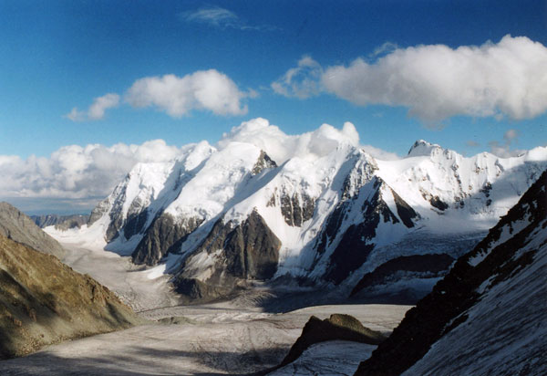
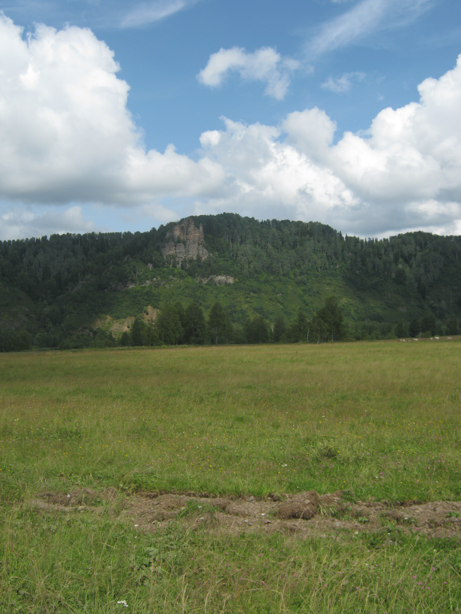
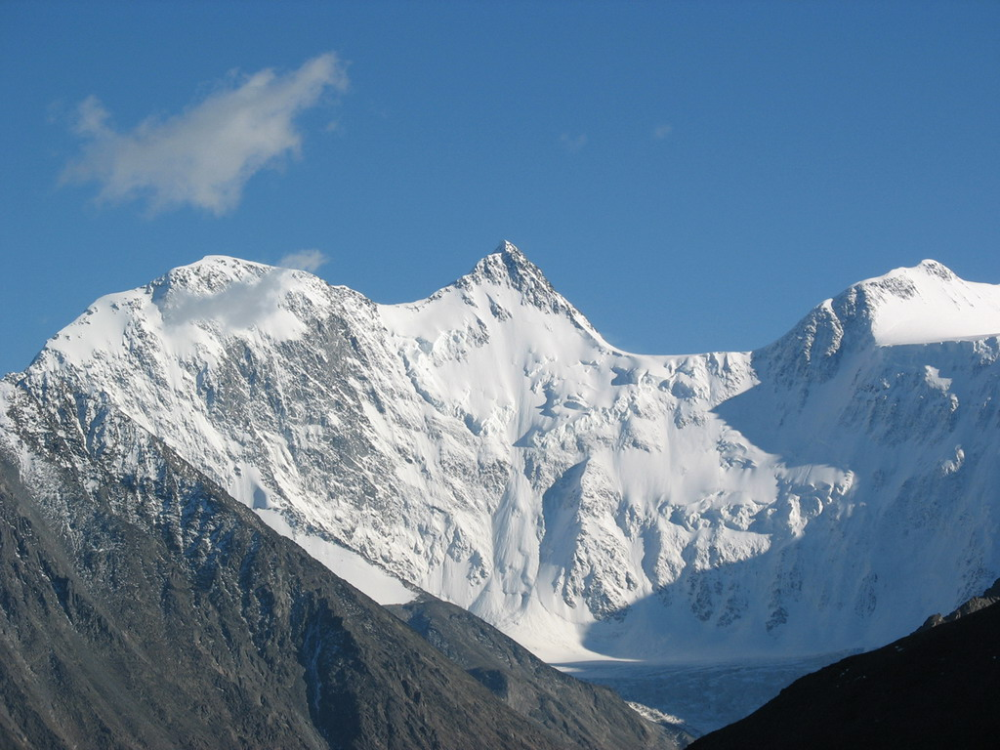

АЛТАЙ: ДРЕВНИЕ ИРИЙСКИЕ ГОРЫ - ОБИТЕЛЬ РОДА
АЛТАЙ: АЛ- Камень, Твердь; ТАЙ- Вершина – КАМЕННАЯ ВЕРШИНА
АЛТАЙ: А- вместилище разума, Л- любви, Т-тех(триединство того мира Наследия Предков), А- вместилище разума, Й- родопорождённые.
Вместилилище разума Любви триединства того мира Наследия Предков с вместилищем разума Родопорождённых (человечества на нашей Земле).

Алтай!
Алтай прекрасный и родной наш край!
В нем Веды. Мощь и Сила!
Ключи заложены Земли
Он – Батюшка России! Великий Род!
В Каноне – Суть Его Дары!
Природа и Богатство
Где Дух Божественной Мечты
Хранит все государство!
И Благороднейший Олень
Владыка мест Священных
Он каждый Божий светлый день
Оберегает Край Родной
От мыслей чужеродных, тленных.
И в золотых его рогах
Небесная долина
И музыка звучит Души
И флейты, магдалины!
Журчит Родник у Ног Его
Что от небес исходит
Жизнерождающий Исток
Он человеку храм души простроит!
(Е.Г. Панькова)

Святой Родник в с. Дмитривке Турочакского района Республике Алтай
«Своим лучом прогрею,
Своим лучом и исцелю,
Когда коснёшься всей Душою
Истока Вечности Воды!»
Он истекает из подножья
«Сидячего Монаха» зрелого во тьме
Гора Его всегда на солнце
Стоит и царствует,
Дарует Силу Родника Живой Воды.
Орлы здесь в воле гнёзда вьют,
Маралы здесь детей своих заводят,
Места те вечные людей к себе зовут,
Здесь Храм Души все очищения проходят!
Величие природы – Вечный путь,
Здесь можно всей душою отдохнуть,
Хвои горячей – грудью всей вдохнуть,
И если голову поднять, взглянуть,
То, очарует лучезарными очами:
С небес здесь звёзды посылают свет Сварога,
И в созерцании своём Природа
Дарует всем целительный поток
И в первозданности своей
весь радужный глоток,
Что побывав у Родника живой воды,
Испив как будто чистоту рассвета,
Почувствуешь, что вновь родился ты,
Восторжествует Дух родного ветра!
(Е.Г. Панькова)

Небесной радости держава!
Алтарь Души Человеческой перед тобой,
И под ногами стелется, зовёт с собой,
Алтай – Он колыбель всех чувств и Родина любви,
Встречай Его и чуда жди!
Где пенье птиц не отразимо
И переливы их играют гимны,
А значит музыка вселенной
Душа, что в воле, окрылённой
Взметнётся в вышину,
И где почувствуешь божественности красоту
И яркость жизни, и природы глубину!
Обитель эта полна всех тайн,
Держава горная – Алтай!
Сейчас ты только двери отворил,
Одним глазком ты посмотрел
Как величава и красива
Бога Рода Сила!
В лазоревой долине снегопада гор Ирийских
Зовёт и манит Душу к фреске
То быль, то не быль, словно сказка
Судьбы дорог – небесная подсказка,
Что вытянет всю боль души, залечит раны,
Подарит войско родовой охраны.
И обернувшись в образы тотема,
ты попадаешь в мир другой.
А там поля и реки чудотворны
Где небо всех высот духовных
С красавицей Землёй невестой
Встречают каждого и обнимают
И в созиданьи света пути все открывают.
В одном движении и ритме сердца стук
Вдруг встретятся Душа и Дух,
И в отражении осознании себя
Увидишь внутреннее солнце,
Откроешь в будущность дивное оконце.
В гармонии Великого АУМа,
Где в тишине встречая новую зарю
Ты мыслеобразы построишь, и польётся твоя дума,
С поклоном низким припадёшь к священному огню.
Ты вновь для триединства вернёшься на Алтай,
Чтобы потомкам рассказать,
Что есть Небесной радости Держава
Богами окрылённая Земля
Про-Матерь человечества Она!
(Е.Г. Панькова)
АЛТАЙ - возвышенный и древний - удивляет и притягивает. Сейчас он быстро превращается в место паломничества. Отовсюду приезжают поклониться Матери-Природе и Горнему Миру, очиститься душой и возрасти духом.
АЛТАЙ – Алатырь-камень - всем камням отец. Согласно древним легендам, Алатырь упал с неба и на нем были высечены Законы Сварога. Так Алатырь - не только гора, либо камень - это сакральный центр Мира. Он триедин, потому означает путь Прави между Явью и Навью, он связал миры - горний, небесный, и явленный, дольний. Он двуедин - и мал, и велик, и легок и тяжёл. Он - един, ибо в нем объединены все миры. Он непознаваем, подобно Прави. Посредниками между мирами была также книга Вед, упавшая с неба, и вещая птица Гамаюн. И Книга, и Птица - это тоже Алатырь. Под тем камнем сокрыта вся сила земли Русской. Бел-горюч камень Алатырь - это священный камень, средоточие Знания Вед, посредник между человеком и Богом. Он и «мал и весьма студен", и «велик, как гора». Алатырь связан с небесным миром, Ирием, Беловодьем, - то есть с раем, по коему текут молочные реки. И место это считают центром земли, которое наделяется сакральными и целебными свойствами. Священный Алатырь есть Алтай, Алтарь пред престолом Всевышнего. Это и Златогорье, и Белогорье, ибо над Алтайскими горами парит величественная Святая, белая гора, именуемая в настоящее время Белуха. В стихе о Голубиной книге и русских заговорах алатырь сравнивают с алтарем, расположенном в центре мира. На нем сидит девица - Заря, с нее текут светлые целительные источники, то есть реки - живая вода. Своей розовой фатой украшает весь белый свет, будит и защищает мир от тьмы и зла.
Знак Алатырь, звезда Алатырь (Крест Сварога) Восьмилепестковая звезда, древний символ сворачивания и разворачивания Вселенной, - Алатырь, камень-заря, на котором отдыхают и набираются силы Боги. От этого названия пошло название олтарь, алтарь. Алатырь - Око Рода, из него сияет Свет Рода Всевышнего, Божья благодать, которую он дарует всему сущему и несущему. На Алатыре высечена вся мудрость Вселенной. Алатырь вышивают на рубашках ведающих людей, или как оберег в далекий и опасный путь. Знак подходит как мужчине, так и женщине. Вышивают на рушниках. Это Символ Рода, в нем сокрыты все четы и резы (руны), сварги, круги, триглавы и двуглавы, и другие священные знаки, ибо он - основа и конец. Он един и множествен одновременно. Все другие обереги лишь малые проявления его. Алатыри как символ гармонии Вселенной - это еще и образ капища. Вышивается на рубахах как мужских, так и женских, очищает и наполняет солнечной силой (жизненной) или лунной (понимание Магии).
Алтай – это сердце нашей Земли, колыбель всего человечества. Алтай считают вечным материком. Сторонники данной идеи предполагают, что в момент выхода из мирового океана в результате планетарного взрыва родилась наша Земля. Поэтому все части ее тела были разбросаны, и только вечный материк – Алтай (Ханкайский, Гобийский, Монгольский, Тибетский, Рудный, Степной, Кемеровский, Абаканский, Тувимский) остались на месте.
На Алтае находится много свящённых гор. И самая мощная святыня – гора Уч Сумер, на современном русском языке именуемая Белухой. Русский ученый-философ Н. Ф. Федоров в книге «Философия общего дела» одним из центров мировых цивилизаций выделял вселенскую полярную гору Меру как ось мира. «Гора Меру считалась центральной точкой бесконечного Космоса, вокруг нее как мировой оси вращались созвездие Медведицы, Солнце, Луна, планеты и сонмы звезд», – пишет в книге «Тайны русского народа» В. Н. Демин. Гора Меру – центр Мира, на которую ссылаются древние источники. В древнеиндийском эпосе «Махабхарата» описывается вселенский символ доиндоевропейских и индоарийских народов – гора Меру. Сохранилась древнеиндийская карта, датированная II тыс. до н.э., указывающая на ось Земли – гору Меру, которая расположена к северу от Индии, от которой в равностороннем радиусе плещутся четыре мировых океана. Все планеты полный оборот вращения совершают над Алтаем. И, как утверждают многие исследователи, только на Алтае круглый год можно видеть созвездие Большой Медведицы. В древнеиндийских эпосах «Махабхарата» и «Рамаяна» описывается приход их предков саков с севера, откуда Большая Медведица указала им путь на юг. Разные народы название Алтай переводят по-разному. С алтайского данный геоним переводится как Ала-Вселенная, Тай - Оплот. Алтай – это значит оплот Вселенной.
Сведения бывают разного назначения и хранятся они в различных видах. И чтобы узнать сведения без искажений, нужно обращаться к первоисточникам. Это древние Ведические писания наших мудрых Предков. Все образованные люди древнего мира прекрасно знали, что представления о природе Вселенной, если они правильные, могут стать ключом к невиданному прогрессу цивилизации, а если они не правильные, то могут привести к гибели и цивилизации и жизни на Земле. Правильные представления о природе Вселенной будут созидающими, а ошибочные — разрушающими. Поэтому никогда не поздно начинать учиться искать истину хотя бы среди тех знаний, которые являются наиболее доступными. С помощью анализирования различных источников информации, будь то научное исследование, либо древний и священный текст, каждый человек, используя своё интуитивное восприятие сам способен выстроить свою картину окружающего мира. Только так человек сможет правильно воспринимать все происходящее с ним и вокруг него, что даст ему возможность самому управлять своей жизнью. Попробуем создать своё представление о мире, в котором мы живем, используя существующие описания нашей Вселенной, взятые из древних источников, сохраненных нашими предками.
Для примера возьмем "Книгу Света” из Славяно-Арийских Вед, в которой наши предки образно описывают процесс создания нашей Вселенной, в соответствии с теми знаниями, которыми они владели в древности:
«Вышними Богами наши Предки называют тех Богов, кои поддерживают во Вселенных различные формы Жизни и сохраняют гармоничное течение всех жизненных явлений в светлых Мирозданиях в соответствии с Незыблемыми Законами Единого Творца-Созидателя, Коего мы люди нарекаем Великий РА-М-ХА. Каждый из Вышних Богов выполняет свои Небесные деяния, но при этом наши Вышние Светлые Боги помогают людям, идущим по Путям Духовного и Душевного Развития, по Путям Творческого Созидания и Искренней Любви, по Праведным Путям, в которых Чистая Совесть является мерилом всего. » Далее сказано, что "создателем” нашей Вселенной является Творец (по славянски Ра-М-Ха), проявленный, но не воплощенный в нашей действительности.
"...Некогда, вернее тогда, когда еще не было времен, не было Миров и Реальностей, нами, людьми, воспринимаемых, был, не воплощаясь, один только Великий Ра-М-Ха. Он проявился в Новую Действительность и от восприятия Новой Безкрайней Безконечности озарился Великим Светом Радости. И тогда появилась Безконечная Новая Вечность в Новой Действительности родившаяся, и безконечное число её проявлений появилось..." Упростив перевод трёхрунника Ра-М-Ха, мы получим - Сияющих Миров Созидательная Сила.
«РОД-ПОРОДИТЕЛЬ – неотъемлемая часть Единого Творца – Созидателя – Великого Рамхи. Род - Породитель является Единым Богом – Покровителем всех Великих Родов и потомков Рода Небесного. Бог покровитель Вселенных Мира Прави. Он является Вышним Богом-Хранителем всех Живых и Разумных обитателей во всех неповторимых видимых и невидимых Мирах, существующих в различных и многообразных Вселенных. Могучая Его Сила покровительства проистекает по всем Обителям, расположенных в Мирах Яви, Слави, Прави, и потому для обозначения Светлого образа во время Правьславления Вышнего Рода-Породителя наши Великие и многомудрые Предки использовали Священный Трёх-Рунник, который они изображали во Капищах и на Алатырь-Камне».
«БОГ РОД – персонификация множества всех Светлых Богов и многомудрых Предков наших. Вышний Бог РОД – Един и Множествен одновременно. Когда мы говорим обо всех Древних Богах и Великих Мудрых Предков наших: Пращурах, Прадедах, Дедах и Отцах, - мы говорим – это мой Род. К нему мы обращаемся, когда необходима Духовная Душевная поддержка Светлых Богов и Предков».
«РОД – славянский Бог, творец, «родитель» Вселенной, всего видимого и невидимого. Это «Отец и Мать» всех богов, воплощение нерушимости славянского племени, все многочисленные потомки которого некогда изошли от одного общего предка. Когда рождается человек, его будущая судьба записывается в книгу Рода, и «чего на роду написано», никому не миновать!»
Род - Природный Корень, единственная Сила внутри каждого из нас, твёрдая и вечная опора, которая просветит, объединит и направит наш народ. Сила Рода – это гигантская Мощь, ибо исток её в самой Природе. Нет выше Силы во Вселенной, нет выше Силы в человеческом Мире. Эта Величайшая Сила живёт в каждом из нас, и мы ощущаем Её.
Существующие ведические писания славян имеют глубокие исторические корни, восходящие к старой Славяно-Арийской эпохе. Это огромнейший пласт высокой культуры наших Предков, где в их наследии большое значение имеют сказки. Ведь, что такое сказка? Это народная мудрость, передаваемая из поколения в поколение, накопленная опытом, и в этом понятии нам поможет могучий Русский Язык, который является ключом к древним забытым знаниям, и только через него можно понять саму суть величия всего мироздания. Сказка (по древнему Славяно-Арийскому словарю) – сказ, наказ, указ Великого Бога Рода, в которых переданы Его заповеди и раскрыты ключи счастливой гармоничной жизни человека с природой, духовности нации, её сохранение и процветание. Эти корни дают прикоснуться к истинному знанию об очень богатой летописи прекрасных традиций и самобытной неповторимой культуре. Задача сказок проста и сложна одновременно: вспомнить забытое, сохранив главную истину. Из века в век переходили сказания, и дошли до наших дней, с образами определённых героев. Но как сохранили в себе они передаваемые знания? Многие образы исказились и стали себе противоположны, т.е. растерялась, растворилась правда, дающая расцвет обществу ныне живущему. Ответ всему: деградация нации, пьянство и наркомания, падение духовности и нравственности, болезни и распад многих личностей. А сказки – это и есть духовный родовой энергетический потенциал нации. Нынешние положительные сказочные образы можно сравнить с крошечными жемчужинами рассыпанных из драгоценного ожерелья, потерянного во времени.
Существует настоящий сильный и красивый образ Бабы – Йоги, а не - Яги. Это Златая Баба, Златая Мать, является древней богиней, жрицей, охранительницей сакральных знаний, владычицей зверей, леса и земных стихий, повелительницей державы смерти, посредницей между мирами живых и мертвых, людей и духов, Яви и Нави. Она — аскетница, отшельница и затворница, знахарка и ведунья, прародительница, хранительница, покровительница, помощница и родовоспоможеница Рода Человеческого, домашнего очага, огня, хлеба, любви, но главное — она наставник и учитель человека в обращении с его могущественнейшими жизненными силами. Главная идея сказов Рода: возвращение к Родным истокам. Значимость изучения наследия Предков, для определения его важности в поднятии духовной нравственности нынешнего поколения и будущих потомков. Космологическая природа Ведической системы знаний о мироздании древних славян. Баба-Йога (Йогиня-Матушка) вечнопрекрасная, любящая, добросердечная богиня-покровительница детей-сирот и детей вообще. Она странствовала по Мидгард-Земле то на огненной Небесной колеснице, то верхом на коне по всем землям, на коих жили Роды Великой Расы и потомки Рода Небесного, собирая беспризорных детей-сирот по градам и весям. В каждой Славяно-Арийской Веси, даже в каждом многолюдном граде или поселении, Богиню-Покровительницу узнавали по излучающейся доброте, нежности, кротости, любви и нарядным сапожкам, украшенным золотыми узорами, и показывали ей, где живут дети-сироты. Простые люди называли богиню по-разному, но обязательно с нежностью, кто Бабушкой Йогой Златой ногой, а кто и совсем попросту - Йогиней-Матушкой. Детей-сирот Йогиня доставляла в свой предгорный Скит, который находился в самой чаще леса, у подножья Ирийских гор (Алтай). Все это Она делала для того, чтобы спасти от неминуемой гибели этих последних представителей из древнейших Славянских и Арийских Родов. В предгорном Скиту, где Иогиня-Матушка проводила детей-сирот через огненный обряд посвящения Древним Вышним Богам, имелось Капище Рода, высеченное внутри горы. Рядом с горным Капищем Рода, в скале имелось специальное углубление, которое Жрецы Рода называли - Пещь Ра. Из него выдвигался каменный помост, разделенный выступом на два равных углубления, называемый лапата. В одно углубление, которое было ближе к Пещи Ра, Йогиня-Матушка укладывала спящих детей-сирот в белые одеждах. Во второе углубление накладывался сухой хворост, после чего лапата задвигался обратно в Пещь Ра, и Йогиня поджигала хворост. Для всех присутствующих на Огненном обряде это означало, что дети-сироты были посвящены Древним Вышним Богам и в мирской жизни Родов, их никто более не увидит. Чужестранцы, которые иногда присутствовали на Огненных Обрядах, очень красочно рассказывали в своих краях, что своими глазами наблюдали, как маленьких детей принесли в жертву Древним Богам, бросив их живыми в Огненную Печь, и сотворила сие Баба Йога. Чужестранцам было неведомо, что когда задвигался помост-лапата в Пещь Ра, специальный механизм спускал каменную плиту на выступ лапаты, и отделял углубление с детьми от Огня. Когда загорался Огонь в Пещи Ра, Жрецы Рода переносили детей-сирот из углубления на лапате в помещения Капища Рода. Впоследствии из детей-сирот воспитывали Жрецов и Жриц, а когда они становились взрослыми, юноши и девушки создавали семьи и продолжали свой Род. Но ничего из этого чужеземцы не ведали и продолжали распространять сказки о том, что дикие Жрецы Славянских и Арийских народов, а в особенности кровожадная Баба Йога, детей-сирот в жертву Богам приносят. Эти чужеземные «сказки» повлияли на Образ Йогини-Матушки, когда Образ красивой молодой Богини подменили образом древней злой и горбатой старухи со спутанными волосами, которая крадет маленьких детей, жарит их в печи в лесной избе и потом поедает их. Даже имя Богини Йоги исказили, стали называть Ее "Баба Яга костяная нога" и стали пугать Богиней всех детей.
Древнюю Ведическую Мудрость необходимо познавать не только умом, её нужно принять в своё сердце и вникнуть в каждый Образ. Но только тогда, когда информация (набор характеристик, который не даёт полного знания) проходит через Сердце, Душу, Разум, Ум, Дух в жизненном опыте, и это становится Образом Жизни, тогда информация становится Ведическим Знанием. Ведь, земной человек – это многоструктурная система, которая имеет:
- Двухмерный Разум (система изучения и познавания);
- Трёхмерное Тело (существующее в четвёртом измерении - времени);
- Шестнадцатимерный Ум (система воплощения и творчества);
- Многомерную душу
- Безмерный (внемерный) Дух
Для полного развития ему также необходимо иметь Совесть, т.е. точнее внешний Свет, проникающий вовнутрь и освещающий те или иные мгновения Жизни человека, его структуры. Телом управляет Душа, Душой управляет Дух, а Духом управляет Совесть.
- Материалистическую систему восприятия в основном используют люди первой категории развития – «Троичный человек» - житель – единождыживущий.
- Душевный – Семиричный человек относится к идеалистической системе – Людина - дваждырождённый.
- Духовный - Трансцендентная система восприятия – у девятиричного человека – чело(мысль), век (время), т.е. мыслящий во времени, безсмертен.
Человека, принадлежавшего к шестнадцатому типу называли Ас (Аз), т.е. Бог, живущий на Земле.
И если говорить языком наших предков, то взаимодействие ДНК человека с космической программой управления, то это и есть связь с Родом Породителем, который является, по сути, программой Творца (Ра-М-Ха), т.е. той Силы, которая преобразовывая энергию в новую форму существования (материю) также создаёт и программы которые выполняют определённые функции: по формированию, одушевлению, одухотворению, совершенствованию и т.п. всех объектов нашей Вселенной. Именно эта программа (Род Породитель) является Породителем любой естественной формы жизни нашей Вселенной, и отвечает за создание, сохранение и эволюцию всех разумных живых существ, которые имеют в себе частицу Творца. Как и любое творение Всевышнего (Ра-М-Ха) эта программа является не набором логических команд и действий, а в первую очередь – Личностью, Совершенной и Мудрой, воплощающей в нашей действительности принципы созидания, заложенные в него Творцом. Наши предки называли его Род - Породитель, который, как утверждает древняя вера: "…является Вышним Богом-Хранителем всех живых и разумных обитателей во всех неповторимых видимых и невидимых Мирах, существующих в различных и многообразных Вселенных”. (Славяно-Арийские Веды).
И ведь, действительно, порою в жизни всё происходит как в сказке. Побывав в чертогах Рода, Его сказочных местах Чистоты ПриРодной, будто в доме Родном, возможно, восстановив и связь Родовую - овладеешь Родовым Знанием, и жизнь твоя в корне изменится. Многолетние мучительные блуждения Души и Духа, одиночество и сиротство закончатся. Ты поймёшь, наконец, зачем ты родился на Свет Божий. Ты осознаешь Великую радость своего Рождения, прикоснувшись к родовым истокам. Ты почувствуешь живую связь с Великим Родом, со своими Предками, которые жили сотни тысяч лет назад, и с поколениями Родных в Будущем. Окрепнет здоровье, придёт Сила и небывалая Ясность Ума, Тепло и Свет. Ты узнаешь, как много вокруг незаменимых родных людей, которых ты, почему-то не замечал. Укрепится добрый настрой в твоей семье! Ты узнаешь Радость и Счастье!
Паньков Олег Геннадьевич, историк – исследователь «Ведической Культуры Семьи и Рода в Наследии Предков»;
Панькова Елена Геннадьевна, директор Культурно-Просветительского Общественного Фонда Алтайского края «Наследие Родовых Истоков».
Литература:
- Грушко Е.А., Медведев Ю.М. Словарь славянской мифологии, - Нижний Новгород «Русский купец» и «Братья славяне», 1996.-480 стр. (издание второе, переработанное и дополненное).
- «Мировосприятие Славян (Юджизм)», серия – Наследие Славян и Ариев. Издание для познавательного пользования. Соликамск. 2006г.- 48стр.
- Славяно-Арийские Веды. «Слово Волхва Велимудра». Часть вторая - Омск; Издание Древнерусской Инглиистической церкви Православных Староверов- Инглингов; Издательство «АРКОР», 2000.-256 стр.
© 2013. Олег Паньков. Все права защищены.